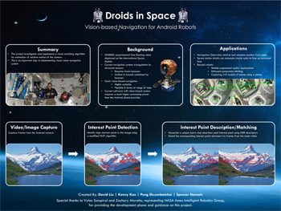
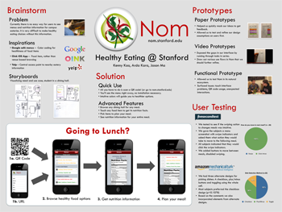
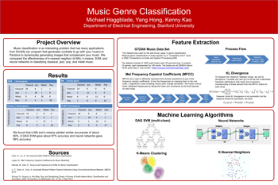

My team worked with NASA to investigate and implement a visual matching algorithm for estimation of relative motion of the camera. This is an importent step to implementing visual robot navigation system for NASA robots in space stations. For more information, click on the poster on the right or check out our source code on github! |
 |
Youmote is a Kinect-powered TV controller that does what you want before you ask for it! My team also won #2 at the CS247: Human-Computer Interaction Studio final competition. Check out our project website, presentation video, and source code! |
My team implemented two selection gestures with the Microsoft Kinect. Our application area of interest was the party dance floor, and we created two gestures for both the dancers and the DJ. Our project was voted #1 in class at CS247: Human-Computer Interaction Studio! Check out our project website, presentation video, and source code! |
Nom is a mobile web application prototype that promotes healthy eating on Stanford campus. All the menus are listed in the application and color-coded based on how healthy they are. Unfortunately the University dining services does not have a good web api to automate the menu imports, so the website currently has no menu on it. For more information, please check out our website, source code, and poster on the right. |
 |
My team investigated various machine learning algorithms, including k-nearest neighbor (k-NN), k-means, multi-class SVM, and neural networks to classify the following four genres: classical, jazz, metal, and pop. We implemented the algorithms in Matlab, and achieved a 90%+ success rate with some of the algorithms. For more information, check out our paper, poster, and source code! |
 |
I worked on 2 projects at Opower. The first one involved creating dynamically-generated FAQ sites for Opower's utility clients so that our front-end engineer didn't have to spend a few hours to copy and paste all the site content. My solution allowed a non-technical person to hit some buttons, fill out some forms on the content, and immediately generate a website. You can see two of the examples here and here. Besides the FAQ sites, I also participated in the bi-annual "Innovation Day", working on a project that involved short-url for users to sign up for our platform. I subsequently acted as the PM and engineer of the project, bringing in together 8 people from various functions to collaborate. The feature is currently in Opower's roadmap, and is scheduled to go live later this year. |
At Facebook, I worked as a hardware engineer on the server team's first energy-efficient server design. This project eventually became the Open Compute Project, with Facebook releasing the specs and designs of the server and datacenters. Specifically, I worked on testing memory, CPU energy usage, and various hardware components on the motherboard. The new system is estimated to increase 38% in energy usage and decrease 24% in price compared to the previous models! |
I joined the Workstation Global Business Unit's Taiwan Design Center (TDC) at Hewlett-Packard. I worked on TDC's first project, the Workstation Z200, and designed the Energy Star 5.0 test plan - an international standard for energy efficient consumer products. We eventually obtained the Energy Star 5.0 certification (although I dare not take the credit since I wasn't the one designing the actual computer components!). |